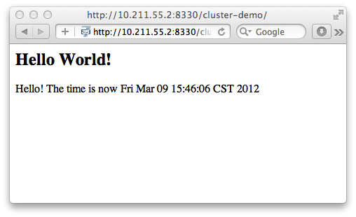

© 2017 The original authors.
1. Introduction To High Availability Services
1.1. What are High Availability services?
WildFly’s High Availability services are used to guarantee availability of a deployed Java EE application.
Deploying critical applications on a single node suffers from two potential problems:
-
loss of application availability when the node hosting the application crashes (single point of failure)
-
loss of application availability in the form of extreme delays in response time during high volumes of requests (overwhelmed server)
WildFly supports two features which ensure high availability of critical Java EE applications:
-
fail-over: allows a client interacting with a Java EE application to have uninterrupted access to that application, even in the presence of node failures
-
load balancing: allows a client to have timely responses from the application, even in the presence of high-volumes of requests
| These two independent high availability services can very effectively inter-operate when making use of mod_cluster for load balancing! |
Taking advantage of WildFly’s high availability services is easy, and simply involves deploying WildFly on a cluster of nodes, making a small number of application configuration changes, and then deploying the application in the cluster.
We now take a brief look at what these services can guarantee.
1.2. High Availability through fail-over
Fail-over allows a client interacting with a Java EE application to have uninterrupted access to that application, even in the presence of node failures. For example, consider a Java EE application which makes use of the following features:
-
session-oriented servlets to provide user interaction
-
session-oriented EJBs to perform state-dependent business computation
-
EJB entity beans to store critical data in a persistent store (e.g. database)
-
SSO login to the application
If the application makes use of WildFly’s fail-over services, a client interacting with an instance of that application will not be interrupted even when the node on which that instance executes crashes. Behind the scenes, WildFly makes sure that all of the user data that the application make use of (HTTP session data, EJB SFSB sessions, EJB entities and SSO credentials) are available at other nodes in the cluster, so that when a failure occurs and the client is redirected to that new node for continuation of processing (i.e. the client "fails over" to the new node), the user’s data is available and processing can continue.
The Infinispan and JGroups subsystems are instrumental in providing these data availability guarantees and will be discussed in detail later in the guide.
1.3. High Availability through load balancing
Load balancing enables the application to respond to client requests in a timely fashion, even when subjected to a high-volume of requests. Using a load balancer as a front-end, each incoming HTTP request can be directed to one node in the cluster for processing. In this way, the cluster acts as a pool of processing nodes and the load is "balanced" over the pool, achieving scalability and, as a consequence, availability. Requests involving session-oriented servlets are directed to the the same application instance in the pool for efficiency of processing (sticky sessions). Using mod_cluster has the advantage that changes in cluster topology (scaling the pool up or down, servers crashing) are communicated back to the load balancer and used to update in real time the load balancing activity and avoid requests being directed to application instances which are no longer available.
The mod_cluster subsystem is instrumental in providing support for this High Availability feature of WildFly and will be discussed in detail later in this guide.
1.4. Aims of the guide
This guide aims to:
-
provide a description of the high-availability features available in WildFly and the services they depend on
-
show how the various high availability services can be configured for particular application use cases
-
identify default behavior for features relating to high-availability/clustering
1.5. Organization of the guide
As high availability features and their configuration depend on the particular component they affect (e.g. HTTP sessions, EJB SFSB sessions, Hibernate), we organize the discussion around those Java EE features. We strive to make each section as self-contained as possible. Also, when discussing a feature, we will introduce any WildFly subsystems upon which the feature depends.
2. HTTP Services
This section summarizes the HTTP-based clustering features.
Unresolved directive in high-availability-guide/HTTP_Services.adoc - include::Subsystem_support.adoc[]
3. Clustered Web Sessions
4. Clustered SSO
5. Load Balancing
This section describes load balancing via Apache + mod_jk and Apache
mod_cluster.
5.1. Load balancing with Apache + mod_jk
Describe load balancing with Apache using mod_jk.
5.2. Load balancing with Apache + mod_cluster
Describe load balancing with Apache using mod_cluster.
5.2.1. mod_cluster Subsystem
The mod_cluster integration is done via the modcluster subsystem.
5.3. Configuration
5.3.1. Instance ID or JVMRoute
The instance-id or JVMRoute defaults to jboss.node.name property passed on server startup (e.g. via -Djboss.node.name=XYZ).
[standalone@localhost:9990 /] /subsystem=undertow/:read-attribute(name=instance-id)
{
"outcome" => "success",
"result" => expression "${jboss.node.name}"
}To configure instance-id statically, configure the corresponding property in Undertow subsystem:
[standalone@localhost:9990 /] /subsystem=undertow/:write-attribute(name=instance-id,value=myroute)
{
"outcome" => "success",
"response-headers" => {
"operation-requires-reload" => true,
"process-state" => "reload-required"
}
}5.3.2. Proxies
By default, mod_cluster is configured for multicast-based discovery. To specify a static list of proxies, create a remote-socket-binding for each proxy and then reference them in the 'proxies' attribute. See the following example for configuration in the domain mode:
[domain@localhost:9990 /] /socket-binding-group=ha-sockets/remote-destination-outbound-socket-binding=proxy1:add(host=10.21.152.86, port=6666)
{
"outcome" => "success",
"result" => undefined,
"server-groups" => undefined
}
[domain@localhost:9990 /] /socket-binding-group=ha-sockets/remote-destination-outbound-socket-binding=proxy2:add(host=10.21.152.87, port=6666)
{
"outcome" => "success",
"result" => undefined,
"server-groups" => undefined
}
[domain@localhost:9990 /] /profile=ha/subsystem=modcluster/mod-cluster-config=configuration/:write-attribute(name=proxies, value=[proxy1, proxy2]
{
"outcome" => "success",
"result" => undefined,
"server-groups" => undefined
}
[domain@localhost:9990 /] :reload-servers
{
"outcome" => "success",
"result" => undefined,
"server-groups" => undefined
}5.4. Runtime Operations
The modcluster subsystem supports several operations:
[standalone@localhost:9999 subsystem=modcluster] :read-operation-names
{
"outcome" => "success",
"result" => [
"add",
"add-custom-metric",
"add-metric",
"add-proxy",
"disable",
"disable-context",
"enable",
"enable-context",
"list-proxies",
"read-attribute",
"read-children-names",
"read-children-resources",
"read-children-types",
"read-operation-description",
"read-operation-names",
"read-proxies-configuration",
"read-proxies-info",
"read-resource",
"read-resource-description",
"refresh",
"remove-custom-metric",
"remove-metric",
"remove-proxy",
"reset",
"stop",
"stop-context",
"validate-address",
"write-attribute"
]
}The operations specific to the modcluster subsystem are divided in 3 categories the ones that affects the configuration and require a restart of the subsystem, the one that just modify the behaviour temporarily and the ones that display information from the httpd part.
5.4.1. operations displaying httpd informations
There are 2 operations that display how Apache httpd sees the node:
read-proxies-configuration
Send a DUMP message to all Apache httpd the node is connected to and display the message received from Apache httpd.
[standalone@localhost:9999 subsystem=modcluster] :read-proxies-configuration
{
"outcome" => "success",
"result" => [
"neo3:6666",
"balancer: [1] Name: mycluster Sticky: 1 [JSESSIONID]/[jsessionid] remove: 0 force: 1 Timeout: 0 Maxtry: 1
node: [1:1],Balancer: mycluster,JVMRoute: 498bb1f0-00d9-3436-a341-7f012bc2e7ec,Domain: [],Host: 127.0.0.1,Port: 8080,Type: http,flushpackets: 0,flushwait: 10,ping: 10,smax: 26,ttl: 60,timeout: 0
host: 1 [example.com] vhost: 1 node: 1
host: 2 [localhost] vhost: 1 node: 1
host: 3 [default-host] vhost: 1 node: 1
context: 1 [/myapp] vhost: 1 node: 1 status: 1
context: 2 [/] vhost: 1 node: 1 status: 1
",
"jfcpc:6666",
"balancer: [1] Name: mycluster Sticky: 1 [JSESSIONID]/[jsessionid] remove: 0 force: 1 Timeout: 0 maxAttempts: 1
node: [1:1],Balancer: mycluster,JVMRoute: 498bb1f0-00d9-3436-a341-7f012bc2e7ec,LBGroup: [],Host: 127.0.0.1,Port: 8080,Type: http,flushpackets: 0,flushwait: 10,ping: 10,smax: 26,ttl: 60,timeout: 0
host: 1 [default-host] vhost: 1 node: 1
host: 2 [localhost] vhost: 1 node: 1
host: 3 [example.com] vhost: 1 node: 1
context: 1 [/] vhost: 1 node: 1 status: 1
context: 2 [/myapp] vhost: 1 node: 1 status: 1
"
]
}read-proxies-info
Send a INFO message to all Apache httpd the node is connected to and display the message received from Apache httpd.
[standalone@localhost:9999 subsystem=modcluster] :read-proxies-info
{
"outcome" => "success",
"result" => [
"neo3:6666",
"Node: [1],Name: 498bb1f0-00d9-3436-a341-7f012bc2e7ec,Balancer: mycluster,Domain: ,Host: 127.0.0.1,Port: 8080,Type: http,Flushpackets: Off,Flushwait: 10000,Ping: 10000000,Smax: 26,Ttl: 60000000,Elected: 0,Read: 0,Transfered: 0,Connected: 0,Load: -1
Vhost: [1:1:1], Alias: example.com
Vhost: [1:1:2], Alias: localhost
Vhost: [1:1:3], Alias: default-host
Context: [1:1:1], Context: /myapp, Status: ENABLED
Context: [1:1:2], Context: /, Status: ENABLED
",
"jfcpc:6666",
"Node: [1],Name: 498bb1f0-00d9-3436-a341-7f012bc2e7ec,Balancer: mycluster,LBGroup: ,Host: 127.0.0.1,Port: 8080,Type: http,Flushpackets: Off,Flushwait: 10,Ping: 10,Smax: 26,Ttl: 60,Elected: 0,Read: 0,Transfered: 0,Connected: 0,Load: 1
Vhost: [1:1:1], Alias: default-host
Vhost: [1:1:2], Alias: localhost
Vhost: [1:1:3], Alias: example.com
Context: [1:1:1], Context: /, Status: ENABLED
Context: [1:1:2], Context: /myapp, Status: ENABLED
"
]
}operations that handle the proxies the node is connected too
there are 3 operation that could be used to manipulate the list of Apache httpd the node is connected too.
list-proxies:
Displays the httpd that are connected to the node. The httpd could be discovered via the Advertise protocol or via the proxy-list attribute.
[standalone@localhost:9999 subsystem=modcluster] :list-proxies
{
"outcome" => "success",
"result" => [
"proxy1:6666",
"proxy2:6666"
]
}remove-proxy
Remove a proxy from the discovered proxies or temporarily from the proxy-list attribute.
[standalone@localhost:9999 subsystem=modcluster] :remove-proxy(host=jfcpc, port=6666)
{"outcome" => "success"}add-proxy
Add a proxy to the discovered proxies or temporarily to the proxy-list attribute.
[standalone@localhost:9999 subsystem=modcluster] :add-proxy(host=jfcpc, port=6666)
{"outcome" => "success"}5.4.2. Context related operations
Those operations allow to send context related commands to Apache httpd. They are send automatically when deploying or undeploying webapps.
enable-context
Tell Apache httpd that the context is ready receive requests.
[standalone@localhost:9999 subsystem=modcluster] :enable-context(context=/myapp, virtualhost=default-host)
{"outcome" => "success"}disable-context
Tell Apache httpd that it shouldn’t send new session requests to the context of the virtualhost.
[standalone@localhost:9999 subsystem=modcluster] :disable-context(context=/myapp, virtualhost=default-host)
{"outcome" => "success"}stop-context
Tell Apache httpd that it shouldn’t send requests to the context of the virtualhost.
[standalone@localhost:9999 subsystem=modcluster] :stop-context(context=/myapp, virtualhost=default-host, waittime=50)
{"outcome" => "success"}5.4.3. Node related operations
Those operations are like the context operation but they apply to all webapps running on the node and operation that affect the whole node.
refresh
Refresh the node by sending a new CONFIG message to Apache httpd.
reset
reset the connection between Apache httpd and the node
5.4.4. Configuration
Metric configuration
There are 4 metric operations corresponding to add and remove load metrics to the dynamic-load-provider. Note that when nothing is defined a simple-load-provider is use with a fixed load factor of one.
[standalone@localhost:9999 subsystem=modcluster] :read-resource(name=mod-cluster-config)
{
"outcome" => "success",
"result" => {"simple-load-provider" => {"factor" => "1"}}
}that corresponds to the following configuration:
<subsystem xmlns="urn:jboss:domain:modcluster:1.0">
<mod-cluster-config>
<simple-load-provider factor="1"/>
</mod-cluster-config>
</subsystem>add-metric
Add a metric to the dynamic-load-provider, the dynamic-load-provider in configuration is created if needed.
[standalone@localhost:9999 subsystem=modcluster] :add-metric(type=cpu)
{"outcome" => "success"}
[standalone@localhost:9999 subsystem=modcluster] :read-resource(name=mod-cluster-config)
{
"outcome" => "success",
"result" => {
"dynamic-load-provider" => {
"history" => 9,
"decay" => 2,
"load-metric" => [{
"type" => "cpu"
}]
}
}
}remove-metric
Remove a metric from the dynamic-load-provider.
[standalone@localhost:9999 subsystem=modcluster] :remove-metric(type=cpu)
{"outcome" => "success"}add-custom-metric / remove-custom-metric
like the add-metric and remove-metric except they require a class parameter instead the type. Usually they needed additional properties which can be specified
[standalone@localhost:9999 subsystem=modcluster] :add-custom-metric(class=myclass, property=[("pro1" => "value1"), ("pro2" => "value2")]
{"outcome" => "success"}which corresponds the following in the xml configuration file:
<subsystem xmlns="urn:jboss:domain:modcluster:1.0">
<mod-cluster-config>
<dynamic-load-provider history="9" decay="2">
<custom-load-metric class="myclass">
<property name="pro1" value="value1"/>
<property name="pro2" value="value2"/>
</custom-load-metric>
</dynamic-load-provider>
</mod-cluster-config>
</subsystem>5.5. Apache httpd
The recommended front-end module is mod_cluster but mod_jk or mod_proxy could be used as in Tomcat or other AS version.
To use AJP define a ajp connector in the web subsystem like:
<subsystem xmlns="urn:jboss:domain:web:1.0"> +
<connector name="http" protocol="HTTP/1.1" socket-binding="http"/> +
<connector name="ajp" protocol="AJP/1.3" socket-binding="ajp"/>sTo the ajp in the in the socket-binding-group like:
<socket-binding-group name="standard-sockets"
default-interface="public"> +
.... +
<socket-binding name="http" port="8080"/> +
<socket-binding name="ajp" port="8009"/> +
<socket-binding name="https" port="8443"/>6. EJB Services
This chapter explains how clustering of EJBs works in WildFly 11.
6.1. EJB Subsystem
6.2. EJB Timer
Wildfly now supports clustered database backed timers. For details have a look to the EJB3 reference section
6.2.1. Marking an EJB as clustered
WildFly 11 allows clustering of stateful session beans. A stateful
session bean can be marked with @org.jboss.ejb3.annotation.Clustered
annotation or be marked as clustered using the jboss-ejb3.xml’s
<clustered> element.
MyStatefulBean
import org.jboss.ejb3.annotation.Clustered;
import javax.ejb.Stateful;
@Stateful
@Clustered
public class MyStatefulBean {
...
}jboss-ejb3.xml
<jboss xmlns="http://www.jboss.com/xml/ns/javaee"
xmlns:jee="http://java.sun.com/xml/ns/javaee"
xmlns:c="urn:clustering:1.0">
<jee:assembly-descriptor>
<c:clustering>
<jee:ejb-name>DDBasedClusteredBean</jee:ejb-name>
<c:clustered>true</c:clustered>
</c:clustering>
</jee:assembly-descriptor>
</jboss>6.2.2. Deploying clustered EJBs
Clustering support is available in the HA profiles of WildFly 11. In this chapter we’ll be using the standalone server for explaining the details. However, the same applies to servers in a domain mode. Starting the standalone server with HA capabilities enabled, involves starting it with the standalone-ha.xml (or even standalone-full-ha.xml):
./standalone.sh -server-config=standalone-ha.xmlThis will start a single instance of the server with HA capabilities. Deploying the EJBs to this instance doesn’t involve anything special and is the same as explained in the application deployment chapter.
Obviously, to be able to see the benefits of clustering, you’ll need
more than one instance of the server. So let’s start another server with
HA capabilities. That another instance of the server can either be on
the same machine or on some other machine. If it’s on the same machine,
the two things you have to make sure is that you pass the port offset
for the second instance and also make sure that each of the server
instances have a unique jboss.node.name system property. You can do
that by passing the following two system properties to the startup
command:
./standalone.sh -server-config=standalone-ha.xml -Djboss.socket.binding.port-offset=<offset of your choice> -Djboss.node.name=<unique node name>Follow whichever approach you feel comfortable with for deploying the EJB deployment to this instance too.
| Deploying the application on just one node of a standalone instance of a clustered server does not mean that it will be automatically deployed to the other clustered instance. You will have to do deploy it explicitly on the other standalone clustered instance too. Or you can start the servers in domain mode so that the deployment can be deployed to all the server within a server group. See the admin guide for more details on domain setup. |
Now that you have deployed an application with clustered EJBs on both the instances, the EJBs are now capable of making use of the clustering features.
6.2.3. Failover for clustered EJBs
Clustered EJBs have failover capability. The state of the @Stateful @Clustered EJBs is replicated across the cluster nodes so that if one of the nodes in the cluster goes down, some other node will be able to take over the invocations. Let’s see how it’s implemented in WildFly 11. In the next few sections we’ll see how it works for remote (standalone) clients and for clients in another remote WildFly server instance. Although, there isn’t a difference in how it works in both these cases, we’ll still explain it separately so as to make sure there aren’t any unanswered questions.
Remote standalone clients
In this section we’ll consider a remote standalone client (i.e. a client which runs in a separate JVM and isn’t running within another WildFly 8 instance). Let’s consider that we have 2 servers, server X and server Y which we started earlier. Each of these servers has the clustered EJB deployment. A standalone remote client can use either the JNDI approach or native JBoss EJB client APIs to communicate with the servers. The important thing to note is that when you are invoking clustered EJB deployments, you do not have to list all the servers within the cluster (which obviously wouldn’t have been feasible due the dynamic nature of cluster node additions within a cluster).
The remote client just has to list only one of the servers with the clustering capability. In this case, we can either list server X (in jboss-ejb-client.properties) or server Y. This server will act as the starting point for cluster topology communication between the client and the clustered nodes.
Note that you have to configure the ejb cluster in the jboss-ejb-client.properties configuration file, like so:
remote.clusters=ejb
remote.cluster.ejb.connect.options.org.xnio.Options.SASL_POLICY_NOANONYMOUS=false
remote.cluster.ejb.connect.options.org.xnio.Options.SSL_ENABLED=falseCluster topology communication
When a client connects to a server, the JBoss EJB client implementation (internally) communicates with the server for cluster topology information, if the server had clustering capability. In our example above, let’s assume we listed server X as the initial server to connect to. When the client connects to server X, the server will send back an (asynchronous) cluster topology message to the client. This topology message consists of the cluster name(s) and the information of the nodes that belong to the cluster. The node information includes the node address and port number to connect to (whenever necessary). So in this example, the server X will send back the cluster topology consisting of the other server Y which belongs to the cluster.
In case of stateful (clustered) EJBs, a typical invocation flow involves creating of a session for the stateful bean, which happens when you do a JNDI lookup for that bean, and then invoking on the returned proxy. The lookup for stateful bean, internally, triggers a (synchronous) session creation request from the client to the server. In this case, the session creation request goes to server X since that’s the initial connection that we have configured in our jboss-ejb-client.properties. Since server X is clustered, it will return back a session id and along with send back an "affinity" of that session. In case of clustered servers, the affinity equals to the name of the cluster to which the stateful bean belongs on the server side. For non-clustered beans, the affinity is just the node name on which the session was created. This affinity will later help the EJB client to route the invocations on the proxy, appropriately to either a node within a cluster (for clustered beans) or to a specific node (for non-clustered beans). While this session creation request is going on, the server X will also send back an asynchronous message which contains the cluster topology. The JBoss EJB client implementation will take note of this topology information and will later use it for connection creation to nodes within the cluster and routing invocations to those nodes, whenever necessary.
Now that we know how the cluster topology information is communicated from the server to the client, let see how failover works. Let’s continue with the example of server X being our starting point and a client application looking up a stateful bean and invoking on it. During these invocations, the client side will have collected the cluster topology information from the server. Now let’s assume for some reason, server X goes down and the client application subsequent invokes on the proxy. The JBoss EJB client implementation, at this stage will be aware of the affinity and in this case it’s a cluster affinity. Because of the cluster topology information it has, it knows that the cluster has two nodes server X and server Y. When the invocation now arrives, it sees that the server X is down. So it uses a selector to fetch a suitable node from among the cluster nodes. The selector itself is configurable, but we’ll leave it from discussion for now. When the selector returns a node from among the cluster, the JBoss EJB client implementation creates a connection to that node (if not already created earlier) and creates a EJB receiver out of it. Since in our example, the only other node in the cluster is server Y, the selector will return that node and the JBoss EJB client implementation will use it to create a EJB receiver out of it and use that receiver to pass on the invocation on the proxy. Effectively, the invocation has now failed over to a different node within the cluster.
Remote clients on another instance of WildFly 11
So far we discussed remote standalone clients which typically use either the EJB client API or the jboss-ejb-client.properties based approach to configure and communicate with the servers where the clustered beans are deployed. Now let’s consider the case where the client is an application deployed another AS7 instance and it wants to invoke on a clustered stateful bean which is deployed on another instance of WildFly 11. In this example let’s consider a case where we have 3 servers involved. Server X and Server Y both belong to a cluster and have clustered EJB deployed on them. Let’s consider another server instance Server C (which may or may not have clustering capability) which acts as a client on which there’s a deployment which wants to invoke on the clustered beans deployed on server X and Y and achieve failover.
The configurations required to achieve this are explained in this chapter. As you can see the configurations are done in a jboss-ejb-client.xml which points to a remote outbound connection to the other server. This jboss-ejb-client.xml goes in the deployment of server C (since that’s our client). As explained eariler, the client configuration need not point to all clustered nodes. Instead it just has to point to one of them which will act as a start point for communication. So in this case, we can create a remote outbound connection on server C to server X and use server X as our starting point for communication. Just like in the case of remote standalone clients, when the application on server C (client) looks up a stateful bean, a session creation request will be sent to server X which will send back a session id and the cluster affinity for it. Furthermore, server X asynchronously send back a message to server C (client) containing the cluster topology. This topology information will include the node information of server Y (since that belongs to the cluster along with server X). Subsequent invocations on the proxy will be routed appropriately to the nodes in the cluster. If server X goes down, as explained earlier, a different node from the cluster will be selected and the invocation will be forwarded to that node.
As can be seen both remote standalone client and remote clients on another WildFly 11 instance act similar in terms of failover.
Testcases for failover of stateful beans
We have testcases in WildFly 11 testsuite which test that whatever is explained above works as expected. The RemoteEJBClientStatefulBeanFailoverTestCase tests the case where a stateful EJB uses @Clustered annotation to mark itself as clustered. We also have RemoteEJBClientDDBasedSFSBFailoverTestCase which uses jboss-ejb3.xml to mark a stateful EJB as clustered. Both these testcases test that when a node goes down in a cluster, the client invocation is routed to a different node in the cluster.
7. Hibernate
8. HA Singleton Features
In general, an HA or clustered singleton is a service that exists on multiple nodes in a cluster, but is active on just a single node at any given time. If the node providing the service fails or is shut down, a new singleton provider is chosen and started. Thus, other than a brief interval when one provider has stopped and another has yet to start, the service is always running on one node.
9. Singleton subsystem
WildFly 10 introduces a "singleton" subsystem, which defines a set of policies that define how an HA singleton should behave. A singleton policy can be used to instrument singleton deployments or to create singleton MSC services.
9.1. Configuration
The default subsystem configuration from WildFly’s ha and full-ha profile looks like:
<subsystem xmlns="urn:jboss:domain:singleton:1.0">
<singleton-policies default="default">
<singleton-policy name="default" cache-container="server">
<simple-election-policy/>
</singleton-policy>
</singleton-policies>
</subsystem>A singleton policy defines:
-
A unique name
-
A cache container and cache with which to register singleton provider candidates
-
An election policy
-
A quorum (optional)
One can add a new singleton policy via the following management operation:
/subsystem=singleton/singleton-policy=foo:add(cache-container=server)9.1.1. Cache configuration
The cache-container and cache attributes of a singleton policy must reference a valid cache from the Infinispan subsystem. If no specific cache is defined, the default cache of the cache container is assumed. This cache is used as a registry of which nodes can provide a given service and will typically use a replicated-cache configuration.
9.1.2. Election policies
WildFly 10 includes 2 singleton election policy implementations:
-
simple
Elects the provider (a.k.a. master) of a singleton service based on a specified position in a circular linked list of eligible nodes sorted by descending age. Position=0, the default value, refers to the oldest node, 1 is second oldest, etc. ; while position=-1 refers to the youngest node, -2 to the second youngest, etc.
e.g./subsystem=singleton/singleton-policy=foo/election-policy=simple:add(position=-1) -
random
Elects a random member to be the provider of a singleton service
e.g./subsystem=singleton/singleton-policy=foo/election-policy=random:add()
Preferences
Additionally, any singleton election policy may indicate a preference
for one or more members of a cluster. Preferences may be defined either
via node name or via outbound socket binding name. Node preferences
always take precedent over the results of an election policy.
e.g.
/subsystem=singleton/singleton-policy=foo/election-policy=simple:list-add(name=name-preferences, value=nodeA)
/subsystem=singleton/singleton-policy=bar/election-policy=random:list-add(name=socket-binding-preferences, value=nodeA)9.1.3. Quorum
Network partitions are particularly problematic for singleton services,
since they can trigger multiple singleton providers for the same service
to run at the same time. To defend against this scenario, a singleton
policy may define a quorum that requires a minimum number of nodes to be
present before a singleton provider election can take place. A typical
deployment scenario uses a quorum of N/2 + 1, where N is the anticipated
cluster size. This value can be updated at runtime, and will immediately
affect any active singleton services.
e.g.
/subsystem=singleton/singleton-policy=foo:write-attribute(name=quorum, value=3)9.2. Non-HA environments
The singleton subsystem can be used in a non-HA profile, so long as the cache that it references uses a local-cache configuration. In this manner, an application leveraging singleton functionality (via the singleton API or using a singleton deployment descriptor) will continue function as if the server was a sole member of a cluster. For obvious reasons, the use of a quorum does not make sense in such a configuration.
10. Singleton deployments
WildFly 10 resurrects the ability to start a given deployment on a single node in the cluster at any given time. If that node shuts down, or fails, the application will automatically start on another node on which the given deployment exists. Long time users of JBoss AS will recognize this functionality as being akin to the HASingletonDeployer, a.k.a. " deploy-hasingleton", feature of AS6 and earlier.
10.1. Usage
A deployment indicates that it should be deployed as a singleton via a
deployment descriptor. This can either be a standalone
"/META-INF/singleton-deployment.xml" file or embedded within an existing
jboss-all.xml descriptor. This descriptor may be applied to any
deployment type, e.g. JAR, WAR, EAR, etc., with the exception of a
subdeployment within an EAR.
e.g.
<singleton-deployment xmlns="urn:jboss:singleton-deployment:1.0" policy="foo"/>The singleton deployment descriptor defines which singleton policy should be used to deploy the application. If undefined, the default singleton policy is used, as defined by the singleton subsystem.
Using a standalone descriptor is often preferable, since it may be
overlaid onto an existing deployment archive.
e.g.
deployment-overlay add --name=singleton-policy-foo --content=/META-INF/singleton-deployment.xml=/path/to/singleton-deployment.xml --deployments=my-app.jar --redeploy-affected11. Singleton MSC services
WildFly allows any user MSC service to be installed as a singleton MSC service via a public API. Once installed, the service will only ever start on 1 node in the cluster at a time. If the node providing the service is shutdown, or fails, another node on which the service was installed will start automatically.
11.1. Installing an MSC service using an existing singleton policy
While singleton MSC services have been around since AS7, WildFly 10 adds the ability to leverage the singleton subsystem to create singleton MSC services from existing singleton policies.
The singleton subsystem exposes capabilities for each singleton policy
it defines. These policies, represented via the
org.wildfly.clustering.singleton.SingletonPolicy interface, can be
referenced via the following name:
"org.wildfly.clustering.singleton.policy"
e.g.
public class MyServiceActivator implements ServiceActivator {
@Override
public void activate(ServiceActivatorContext context) {
ServiceName name = ServiceName.parse("my.service.name");
Service<?> service = new MyService();
try {
SingletonPolicy policy = (SingletonPolicy) context.getServiceRegistry().getRequiredService(ServiceName.parse(SingletonPolicy.CAPABILITY_NAME)).awaitValue();
policy.createSingletonServiceBuilder(name, service).build(context.getServiceTarget()).install();
} catch (InterruptedException e) {
throw new ServiceRegistryException(e);
}
}
}11.2. Installing an MSC service using dynamic singleton policy
Alternatively, you can build singleton policy dynamically, which is
particularly useful if you want to use a custom singleton election
policy. Specifically, SingletonPolicy is a generalization of the
org.wildfly.clustering.singleton.SingletonServiceBuilderFactory
interface, which includes support for specifying an election policy and,
optionally, a quorum.
e.g.
public class MyServiceActivator implements ServiceActivator {
@Override
public void activate(ServiceActivatorContext context) {
String containerName = "server";
ElectionPolicy policy = new MySingletonElectionPolicy();
int quorum = 3;
ServiceName name = ServiceName.parse("my.service.name");
Service<?> service = new MyService();
try {
SingletonServiceBuilderFactory factory = (SingletonServiceBuilderFactory) context.getServiceRegistry().getRequiredService(SingletonServiceName.BUILDER.getServiceName(containerName))).awaitValue();
factory.createSingletonServiceBuilder(name, service)
.electionPolicy(policy)
.quorum(quorum)
.build(context.getServiceTarget()).install();
} catch (InterruptedException e) {
throw new ServiceRegistryException(e);
}
}
}12. Related Topics
This section describes additional issues related to the clustering subsystems.
12.1. Modularity And Class Loading
Describe classloading and monitoring framework as it affects clustering applications.
12.2. Monitoring
Describe resources available for monitoring clustered applications.
include::high-availability-guide/Changes From Previous Versions}
13. Clustering and Domain Setup Walkthrough
In this article, I’d like to show you how to setup WildFly 9 in domain mode and enable clustering so we could get HA and session replication among the nodes. It’s a step to step guide so you can follow the instructions in this article and build the sandbox by yourself
13.1. Preparation & Scenario
13.1.1. Preparation
We need to prepare two hosts (or virtual hosts) to do the experiment. We will use these two hosts as following:
-
Install Fedora 16 on them (Other linux version may also fine but I’ll use Fedora 16 in this article)
-
Make sure that they are in same local network
-
Make sure that they can access each other via different TCP/UDP ports(better turn off firewall and disable SELinux during the experiment or they will cause network problems).
13.1.2. Scenario
Here are some details on what we are going to do:
-
Let’s call one host as 'master', the other one as 'slave'.
-
Both master and slave will run WildFly 9, and master will run as domain controller, slave will under the domain management of master.
-
Apache httpd will be run on master, and in httpd we will enable the mod_cluster module. The WildFly 9 on master and slave will form a cluster and discovered by httpd.

-
We will deploy a demo project into domain, and verify that the project is deployed into both master and slave by domain controller. Thus we could see that domain management provide us a single point to manage the deployments across multiple hosts in a single domain.
-
We will access the cluster URL and verify that httpd has distributed the request to one of the WildFly host. So we could see the cluster is working properly.
-
We will try to make a request on cluster, and if the request is forwarded to master, we then kill the WildFly process on master. After that we will go on requesting cluster and we should see the request is forwarded to slave, but the session is not lost. Our goal is to verify the HA is working and sessions are replicated.
-
After previous step finished, we reconnect the master by restarting it. We should see the master is registered back into cluster, also we should see slave sees master as domain controller again and connect to it.

Please don’t worry if you cannot digest so many details currently. Let’s move on and you will get the points step by step.
13.2. Download WildFly 9
First we should download WildFly 9 from the website:
http://wildfly.org/downloads/The version I downloaded is WildFly 9.0.0.Final.
After download finished, I got the zip file:
wildfly-9.0.0.Final.zipNote: The name of your archive will differ slightly due to version
naming conventions.
Then I unzipped the package to master and try to make a test run:
unzip wildfly-9.0.0.Final.zip
cd wildfly-9.0.0.Final/bin
./domain.shIf everything ok we should see WildFly successfully startup in domain mode:
wildfly-9.0.0.Final/bin$ ./domain.sh
=========================================================================
JBoss Bootstrap Environment
JBOSS_HOME: /Users/weli/Downloads/wildfly-9.0.0.Final
JAVA: /Library/Java/Home/bin/java
JAVA_OPTS: -Xms64m -Xmx512m -XX:MaxPermSize=256m -Djava.net.preferIPv4Stack=true -Dorg.jboss.resolver.warning=true -Dsun.rmi.dgc.client.gcInterval=3600000 -Dsun.rmi.dgc.server.gcInterval=3600000 -Djboss.modules.system.pkgs=org.jboss.byteman -Djava.awt.headless=true
=========================================================================
...
[Server:server-two] 14:46:12,375 INFO [org.jboss.as] (Controller Boot Thread) JBAS015874: WildFly 9.0.0.Final "Kenny" started in 8860ms - Started 210 of 258 services (89 services are lazy, passive or on-demand)Now exit master and let’s repeat the same steps on slave host. Finally we get WildFly 11 run on both master and slave, then we could move on to next step.
13.3. Domain Configuration
13.3.1. Interface config on master
In this section we’ll setup both master and slave for them to run in domain mode. And we will configure master to be the domain controller.
First open the host.xml in master for editing:
vi domain/configuration/host.xmlThe default settings for interface in this file is like:
<interfaces>
<interface name="management">
<inet-address value="${jboss.bind.address.management:127.0.0.1}"/>
</interface>
<interface name="public">
<inet-address value="${jboss.bind.address:127.0.0.1}"/>
</interface>
<interface name="unsecured">
<inet-address value="127.0.0.1" />
</interface>
</interfaces>We need to change the address to the management interface so slave could connect to master. The public interface allows the application to be accessed by non-local HTTP, and the unsecured interface allows remote RMI access. My master’s ip address is 10.211.55.7, so I change the config to:
<interfaces>
<interface name="management"
<inet-address value="${jboss.bind.address.management:10.211.55.7}"/>
</interface>
<interface name="public">
<inet-address value="${jboss.bind.address:10.211.55.7}"/>
</interface>
<interface name="unsecured">
<inet-address value="10.211.55.7" />
</interface>
</interfaces>13.3.2. Interface config on slave
Now we will setup interfaces on slave. Let’s edit host.xml. Similar to the steps on master, open host.xml first:
vi domain/configuration/host.xmlThe configuration we’ll use on slave is a little bit different, because we need to let slave connect to master. First we need to set the hostname. We change the name property from:
<host name="master" xmlns="urn:jboss:domain:3.0">to:
<host name="slave" xmlns="urn:jboss:domain:3.0">Then we need to modify domain-controller section so slave can connect to master’s management port:
<domain-controller>
<remote protocol="remote" host="10.211.55.7" port="9999" />
</domain-controller>As we know, 10.211.55.7 is the ip address of master.
You may use discovery options to define multiple mechanisms to connect
to the remote domain controller :
<domain-controller>
<remote security-realm="ManagementRealm" >
<discovery-options>
<static-discovery name="master-native" protocol="remote" host="10.211.55.7" port=9999" />
<static-discovery name="master-https" protocol="https-remoting" host="10.211.55.7" port="9993" security-realm="ManagementRealm"/>
<static-discovery name="master-http" protocol="http-remoting" host="10.211.55.7" port="9990" />
</discovery-options>
</remote>
</domain-controller>Finally, we also need to configure interfaces section and expose the management ports to public address:
<interfaces>
<interface name="management">
<inet-address value="${jboss.bind.address.management:10.211.55.2}"/>
</interface>
<interface name="public">
<inet-address value="${jboss.bind.address:10.211.55.2}"/>
</interface>
<interface name="unsecured">
<inet-address value="10.211.55.2" />
</interface>
</interfaces>10.211.55.2 is the ip address of the slave. Refer to the domain controller configuration above for an explanation of the management, public, and unsecured interfaces.
| It is easier to turn off all firewalls for testing, but in production, you need to enable the firewall and allow access to the following ports: 9999. |
13.3.3. Security Configuration
If you start WildFly on both master and slave now, you will see the slave cannot be started with following error:
[Host Controller] 20:31:24,575 ERROR [org.jboss.remoting.remote] (Remoting "endpoint" read-1) JBREM000200: Remote connection failed: javax.security.sasl.SaslException: Authentication failed: all available authentication mechanisms failed
[Host Controller] 20:31:24,579 WARN [org.jboss.as.host.controller] (Controller Boot Thread) JBAS010900: Could not connect to remote domain controller 10.211.55.7:9999
[Host Controller] 20:31:24,582 ERROR [org.jboss.as.host.controller] (Controller Boot Thread) JBAS010901: Could not connect to master. Aborting. Error was: java.lang.IllegalStateException: JBAS010942: Unable to connect due to authentication failure.Because we haven’t properly set up the authentication between master and slave. Now let’s work on it:
Master
In bin directory there is a script called add-user.sh, we’ll use it to add new users to the properties file used for domain management authentication:
./add-user.sh
Enter the details of the new user to add.
Realm (ManagementRealm) :
Username : admin
Password recommendations are listed below. To modify these restrictions edit the add-user.properties configuration file.
- The password should not be one of the following restricted values {root, admin, administrator}
- The password should contain at least 8 characters, 1 alphabetic character(s), 1 digit(s), 1 non-alphanumeric symbol(s)
- The password should be different from the username
Password : passw0rd!
Re-enter Password : passw0rd!
The username 'admin' is easy to guess
Are you sure you want to add user 'admin' yes/no? yes
About to add user 'admin' for realm 'ManagementRealm'
Is this correct yes/no? yes
Added user 'admin' to file '/home/weli/projs/wildfly-9.0.0.Final/standalone/configuration/mgmt-users.properties'
Added user 'admin' to file '/home/weli/projs/wildfly-9.0.0.Final/domain/configuration/mgmt-users.properties'As shown above, we have created a user named 'admin' and its password is 'passw0rd!'. Then we add another user called 'slave':
./add-user.sh
Enter the details of the new user to add.
Realm (ManagementRealm) :
Username : slave
Password recommendations are listed below. To modify these restrictions edit the add-user.properties configuration file.
- The password should not be one of the following restricted values {root, admin, administrator}
- The password should contain at least 8 characters, 1 alphabetic character(s), 1 digit(s), 1 non-alphanumeric symbol(s)
- The password should be different from the username
Password : passw0rd!
Re-enter Password : passw0rd!
What groups do you want this user to belong to? (Please enter a comma separated list, or leave blank for none)[ ]:
About to add user 'slave' for realm 'ManagementRealm'
Is this correct yes/no? yes
Added user 'slave' to file '/home/weli/projs/wildfly-9.0.0.Final/standalone/configuration/mgmt-users.properties'
Added user 'slave' to file '/home/weli/projs/wildfly-9.0.0.Final/domain/configuration/mgmt-users.properties'
Added user 'slave' with groups to file '/home/weli/projs/wildfly-9.0.0.Final/standalone/configuration/mgmt-groups.properties'
Added user 'slave' with groups to file '/home/weli/projs/wildfly-9.0.0.Final/domain/configuration/mgmt-groups.properties'
Is this new user going to be used for one AS process to connect to another AS process?
e.g. for a slave host controller connecting to the master or for a Remoting connection for server to server EJB calls.
yes/no? yes
To represent the user add the following to the server-identities definition <secret value="cGFzc3cwcmQh" />We will use this user for slave host to connect to master. The add-user.sh will let you choose the type of the user. Here we need to choose 'Management User' type for both 'admin' and 'slave' account.
Slave
In slave we need to configure host.xml for authentication. We should change the security-realms section as following:
<security-realms>
<security-realm name="ManagementRealm">
<server-identities>
<secret value="cGFzc3cwcmQh" />
<!-- This is required for SSL remoting -->
<ssl>
<keystore path="server.keystore" relative-to="jboss.domain.config.dir" keystore-password="jbossas" alias="jboss" key-password="jbossas"/>
</ssl>
</server-identities>
<authentication>
<properties path="mgmt-users.properties" relative-to="jboss.domain.config.dir"/>
</authentication>
</security-realm>
</security-realms>We’ve added server-identities into security-realm, which is used for authentication host when slave tries to connect to master. In secret value property we have 'cGFzc3cwcmQh', which is the base64 code for 'passw0rd!'. You can generate this value by using a base64 calculator such as the one at http://www.webutils.pl/index.php?idx=base64.
Then in domain controller section we also need to add security-realm property:
<domain-controller>
<remote protocol="remote" host="10.211.55.7" port="9999" username="slave" security-realm="ManagementRealm" />
</domain-controller>So the slave host could use the authentication information we provided in 'ManagementRealm'.
Dry Run
Now everything is set for the two hosts to run in domain mode. Let’s start them by running domain.sh on both hosts. If everything goes fine, we could see from the log on master:
[Host Controller] 21:30:52,042 INFO [org.jboss.as.domain] (management-handler-threads - 1) JBAS010918: Registered remote slave host slaveThat means all the configurations are correct and two hosts are run in domain mode now as expected. Hurrah!
13.4. Deployment
Now we can deploy a demo project into the domain. I have created a simple project located at:
https://github.com/liweinan/cluster-demoWe can use git command to fetch a copy of the demo:
git clone git://github.com/liweinan/cluster-demo.gitIn this demo project we have a very simple web application. In web.xml we’ve enabled session replication by adding following entry:
<distributable/>And it contains a jsp page called put.jsp which will put current time to a session entry called 'current.time':
<%
session.setAttribute("current.time", new java.util.Date());
%>Then we could fetch this value from get.jsp:
The time is <%= session.getAttribute("current.time") %>It’s an extremely simple project but it could help us to test the cluster later: We will access put.jsp from cluster and see the request are distributed to master, then we disconnect master and access get.jsp. We should see the request is forwarded to slave but the 'current.time' value is held by session replication. We’ll cover more details on this one later.
Let’s go back to this demo project. Now we need to create a war from it. In the project directory, run the following command to get the war:
mvn packageIt will generate cluster-demo.war. Then we need to deploy the war into domain. First we should access the http management console on master(Because master is acting as domain controller):
http://10.211.55.7:9990It will popup a windows ask you to input account name and password, we can use the 'admin' account we’ve added just now. After logging in we could see the 'Server Instances' window. By default there are three servers listed, which are:
-
server-one
-
server-two
-
server-three
We could see server-one and server-two are in running status and they belong to main-server-group; server-three is in idle status, and it belongs to other-server-group.
All these servers and server groups are set in domain.xml on master as7. What we are interested in is the 'other-server-group' in domain.xml:
<server-group name="other-server-group" profile="ha">
<jvm name="default">
<heap size="64m" max-size="512m"/>
</jvm>
<socket-binding-group ref="ha-sockets"/>
</server-group>We could see this server-group is using 'ha' profile, which then uses 'ha-sockets' socket binding group. It enable all the modules we need to establish cluster later(including infinispan, jgroup and mod_cluster modules). So we will deploy our demo project into a server that belongs to 'other-server-group', so 'server-three' is our choice.
| In newer version of WildFly, the profile 'ha' changes to 'full-ha': |
<server-group name="other-server-group" profile="full-ha">Let’s go back to domain controller’s management console:
http://10.211.55.7:9990Now server-three is not running, so let’s click on 'server-three' and then click the 'start' button at bottom right of the server list. Wait a moment and server-three should start now.
Now we should also enable 'server-three' on slave: From the top of menu list on left side of the page, we could see now we are managing master currently. Click on the list, and click 'slave', then choose 'server-three', and we are in slave host management page now.
Then repeat the steps we’ve done on master to start 'server-three' on slave.
| server-three on master and slave are two different hosts, their names can be different. |
After server-three on both master and slave are started, we will add our cluster-demo.war for deployment. Click on the 'Manage Deployments' link at the bottom of left menu list.

(We should ensure the server-three should be started on both master and
slave)
After enter 'Manage Deployments' page, click 'Add Content' at top right corner. Then we should choose our cluster-demo.war, and follow the instruction to add it into our content repository.
Now we can see cluster-demo.war is added. Next we click 'Add to Groups' button and add the war to 'other-server-group' and then click 'save'.
Wait a few seconds, management console will tell you that the project is deployed into 'other-server-group'.

Please note we have two hosts participate in this server group, so the project should be deployed in both master and slave now - that’s the power of domain management.
Now let’s verify this, trying to access cluster-demo from both master and slave, and they should all work now:
http://10.211.55.7:8330/cluster-demo/
http://10.211.55.2:8330/cluster-demo/
Now that we have finished the project deployment and see the usages of domain controller, we will then head up for using these two hosts to establish a cluster
| Why is the port number 8330 instead of 8080? Please check the settings in host.xml on both master and slave: |
<server name="server-three" group="other-server-group" auto-start="false">
<!-- server-three avoids port conflicts by incrementing the ports in
the default socket-group declared in the server-group -->
<socket-bindings port-offset="250"/>
</server>The port-offset is set to 250, so 8080 + 250 = 8330
Now we quit the WildFly process on both master and slave. We have some work left on host.xml configurations. Open the host.xml of master, and do some modifications the servers section from:
<server name="server-three" group="other-server-group" auto-start="false">
<!-- server-three avoids port conflicts by incrementing the ports in
the default socket-group declared in the server-group -->
<socket-bindings port-offset="250"/>
</server>to:
<server name="server-three" group="other-server-group" auto-start="true">
<!-- server-three avoids port conflicts by incrementing the ports in
the default socket-group declared in the server-group -->
<socket-bindings port-offset="250"/>
</server>We’ve set auto-start to true so we don’t need to enable it in management console each time WildFly restart. Now open slave’s host.xml, and modify the server-three section:
<server name="server-three-slave" group="other-server-group" auto-start="true">
<!-- server-three avoids port conflicts by incrementing the ports in
the default socket-group declared in the server-group -->
<socket-bindings port-offset="250"/>
</server>Besides setting auto-start to true, we’ve renamed the 'server-three' to 'server-three-slave'. We need to do this because mod_cluster will fail to register the hosts with same name in a single server group. It will cause name conflict.
After finishing the above configuration, let’s restart two as7 hosts and go on cluster configuration.
13.5. Cluster Configuration
We will use mod_cluster + apache httpd on master as our cluster controller here. Because WildFly 11 has been configured to support mod_cluster out of box so it’s the easiest way.
| The WildFly 11 domain controller and httpd are not necessary to be on same host. But in this article I just install them all on master for convenience. |
First we need to ensure that httpd is installed:
sudo yum install httpdAnd then we need to download newer version of mod_cluster from its website:
http://www.jboss.org/mod_cluster/downloadsThe version I downloaded is:
http://downloads.jboss.org/mod_cluster/1.1.3.Final/mod_cluster-1.1.3.Final-linux2-x86-so.tar.gz| Jean-Frederic has suggested to use mod_cluster 1.2.x. Because 1.1.x it is affected by CVE-2011-4608 |
With mod_cluster-1.2.0 you need to add EnableMCPMReceive in the VirtualHost.
Then we extract it into:
/etc/httpd/modulesThen we edit httpd.conf:
sudo vi /etc/httpd/conf/httpd.confWe should add the modules:
LoadModule slotmem_module modules/mod_slotmem.so
LoadModule manager_module modules/mod_manager.so
LoadModule proxy_cluster_module modules/mod_proxy_cluster.so
LoadModule advertise_module modules/mod_advertise.soPlease note we should comment out:
#LoadModule proxy_balancer_module modules/mod_proxy_balancer.soThis is conflicted with cluster module. And then we need to make httpd to listen to public address so we could do the testing. Because we installed httpd on master host so we know the ip address of it:
Listen 10.211.55.7:80Then we do the necessary configuration at the bottom of httpd.conf:
# This Listen port is for the mod_cluster-manager, where you can see the status of mod_cluster.
# Port 10001 is not a reserved port, so this prevents problems with SELinux.
Listen 10.211.55.7:10001
# This directive only applies to Red Hat Enterprise Linux. It prevents the temmporary
# files from being written to /etc/httpd/logs/ which is not an appropriate location.
MemManagerFile /var/cache/httpd
<VirtualHost 10.211.55.7:10001>
<Directory />
Order deny,allow
Deny from all
Allow from 10.211.55.
</Directory>
# This directive allows you to view mod_cluster status at URL http://10.211.55.4:10001/mod_cluster-manager
<Location /mod_cluster-manager>
SetHandler mod_cluster-manager
Order deny,allow
Deny from all
Allow from 10.211.55.
</Location>
KeepAliveTimeout 60
MaxKeepAliveRequests 0
ManagerBalancerName other-server-group
AdvertiseFrequency 5
</VirtualHost>| For more details on mod_cluster configurations please see this document: |
http://docs.jboss.org/mod_cluster/1.1.0/html/Quick_Start_Guide.html13.6. Testing
If everything goes fine we can start httpd service now:
service httpd startNow we access the cluster:
http://10.211.55.7/cluster-demo/put.jsp
We should see the request is distributed to one of the hosts(master or slave) from the WildFly log. For me the request is sent to master:
[Server:server-three] 16:06:22,256 INFO [stdout] (http-10.211.55.7-10.211.55.7-8330-4) Putting date nowNow I disconnect master by using the management interface. Select 'runtime' and the server 'master' in the upper corners.
Select 'server-three' and kick the stop button, the active-icon should change.
Killing the server by using system commands will have the effect that the Host-Controller restart the instance imediately!
Then wait for a few seconds and access cluster:
http://10.211.55.7/cluster-demo/get.jsp
Now the request should be served by slave and we should see the log from slave:
[Server:server-three-slave] 16:08:29,860 INFO [stdout] (http-10.211.55.2-10.211.55.2-8330-1) Getting date nowAnd from the get.jsp we should see that the time we get is the same we’ve put by 'put.jsp'. Thus it’s proven that the session is correctly replicated to slave.
Now we restart master and should see the host is registered back to cluster.
| It doesn’t matter if you found the request is distributed to slave at first time. Then just disconnect slave and do the testing, the request should be sent to master instead. The point is we should see the request is redirect from one host to another and the session is held. |
13.7. Special Thanks
Wolf-Dieter Fink has
contributed the updated add-user.sh usages and configs in host.xml from
7.1.0.Final.
Jean-Frederic Clere provided
the mod_cluster 1.2.0 usages.
Misty Stanley-Jones has given a lot of suggestions and helps to make
this document readable.